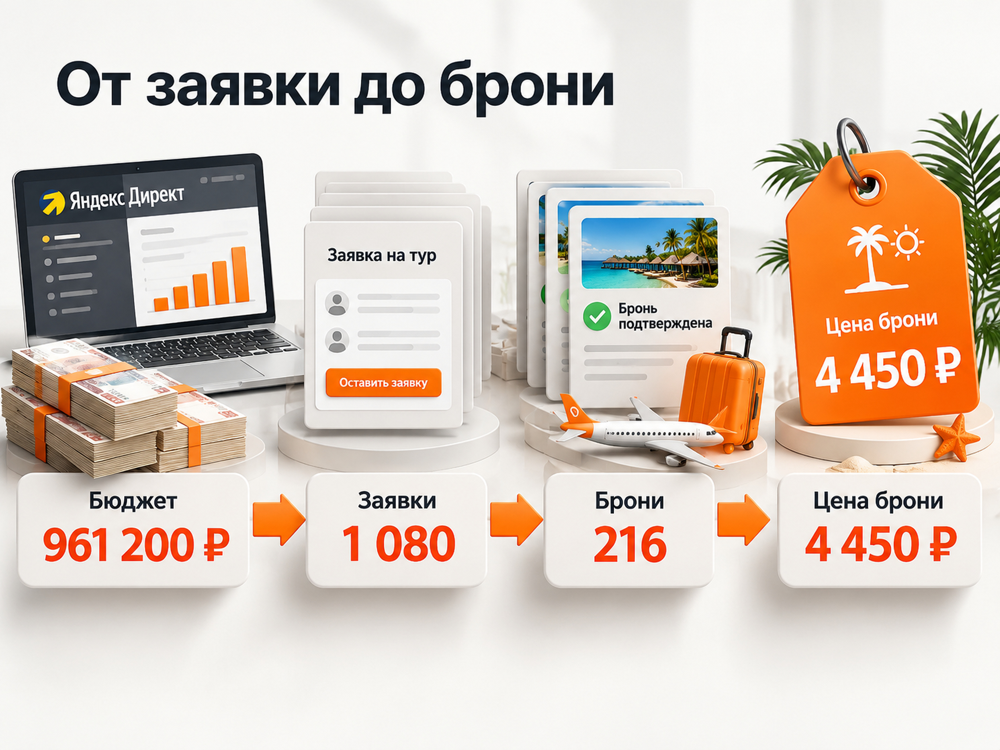

Блог о платном трафике
Реклама туров в Яндекс Директ: как настроить рекламу турфирмы и рассчитать бюджет
Для рекламы туров в Яндекс Директе я рекомендую начинать с Поиска, где люди уже выбирают направление, город вылета и даты путешествия. РСЯ и ретаргетинг стоит тестировать отдельно, а эффективность оценивать не только по заявкам, но и по подтверждённым бронированиям.
Это не средние показатели рынка и не гарантия результата, а отправная точка для расчёта. Реальная стоимость зависит от направления, конкуренции, сезона, сайта и работы менеджеров.
Главная особенность туристической рекламы в том, что агентство продаёт постоянно меняющийся продукт. Цены, даты вылета и доступность туров могут измениться уже на следующий день. Поэтому качественная настройка Директа должна учитывать не только рекламные объявления, но и актуальность предложений, аналитику и работу отдела продаж.
Для первоначального прогноза массовых пакетных туров можно заложить 700-1 200 ₽ за обращение. При рекламном бюджете 100 000 ₽ расчётная модель даёт примерно 83-125 обращений и 8-25 бронирований при конверсии заявки в бронь 10-20%.

Как настроить рекламу турагентства в Яндекс Директе в 2026 году
Начинать нужно с выбора конкретных направлений, оценки спроса и подготовки посадочных страниц. Не стоит сразу рекламировать весь ассортимент турагентства и запускать десятки кампаний.
Практический порядок работы:
- Выбрать приоритетные туры. Определить направления с достаточным спросом, доступными предложениями и приемлемой комиссией агентства.
- Изучить поисковые запросы. Проверить в Яндекс Вордстате направления, города вылета, сезонность и коммерческие формулировки.
- Подготовить сайт. Пользователь должен попадать сразу на подходящее направление, а не искать нужные туры среди десятков стран.
- Настроить аналитику. Отслеживать формы, звонки, сообщения, квалифицированные обращения и продажи.
- Запустить Поиск. Собрать коммерческие запросы, подготовить объявления и проверить работу автоматических стратегий.
- Постепенно тестировать РСЯ и ретаргетинг. Добавлять новые кампании после получения первых данных о качестве обращений.
Для небольшого турагентства важнее обеспечить достаточное количество конверсий в нескольких кампаниях, чем создавать отдельную рекламную кампанию под каждую страну, курорт и отель.
Чем реклама туров отличается от рекламы гостиниц
Турагентство продаёт не конкретный объект, а комбинацию условий путешествия.
Покупатель выбирает:
- страну и курорт;
- город вылета;
- даты и продолжительность;
- отель и тип питания;
- состав туристов;
- стоимость и условия бронирования.
Поэтому запросы «туры в Турцию» и «туры в Турцию из Екатеринбурга на октябрь» отличаются по конкретности намерения. Во втором случае рекламодатель уже понимает значительно больше о потребностях человека.
Важна и продолжительность выбора. По данным Яндекса, путь клиента до конверсии в туристической сфере может занимать около 24 дней. Это отраслевой ориентир, а не фиксированный срок для каждого направления.
Человек может несколько недель сравнивать предложения, обсуждать отпуск с семьёй и обращаться в разные агентства. Для оценки рекламы необходимо учитывать этот период, а не только продажи в день клика.
Что происходит со спросом на туры в 2026 году
Туристический рынок России в 2026 году развивается неравномерно. Зарубежные и внутренние направления показывают разную динамику.
По данным Яндекса, количество поисковых запросов о зарубежных поездках в 2025 году увеличилось на 16%.
По оценке Ассоциации туроператоров России, к концу мая 2026 года бронирования зарубежных туров на летний сезон выросли примерно на 8% относительно предыдущего года. Оценка охватывала крупнейших туроператоров, контролирующих около 85% организованного выездного рынка.
Во внутреннем организованном туризме ситуация отличалась. Летом 2026 года ряд крупных туроператоров сообщил о снижении продаж туров по России на 7-19%.
При этом:
- средняя продолжительность организованного тура по России сократилась с семи до шести ночей;
- средняя глубина бронирования уменьшилась примерно до пяти недель;
- вырос интерес к коротким поездкам и экскурсионным программам.
Эти показатели не означают одинакового изменения спроса во всех регионах. Они отражают результаты конкретных сегментов и компаний.
Для рекламодателя практический вывод следующий: эффективность рекламы Турции, Египта, Дагестана или экскурсионных поездок по России нужно оценивать отдельно. Даже при похожей стоимости обращения конверсия в бронирование может существенно отличаться.
Как учитывать сезонность при рекламе туров
Рекламный бюджет в туризме нужно распределять с учётом периода, когда люди начинают выбирать поездку, а не только дат фактического отдыха.
По данным Яндекса, поисковый интерес к морским турам обычно усиливается с середины мая до начала сентября, а к горнолыжным направлениям - примерно с ноября по март.
Но разные туристические продукты требуют разных сценариев продвижения.
| Тип предложения | Когда активнее рекламировать | Особенность |
|---|---|---|
| Раннее бронирование | До основного туристического сезона | Длительный выбор и сравнение |
| Горящие туры | При появлении актуальных предложений | Короткий срок принятия решения |
| Новогодние туры | В период планирования зимнего отдыха | Ограниченные даты |
| Экскурсии и туры выходного дня | Перед выходными, праздниками и в сезон направления | Важны программа и дата |
| Индивидуальные путешествия | По фактическому спросу и доступности программ | Долгие консультации и высокий чек |
Для раннего бронирования важно заранее накапливать статистику и работать с теми, кто ещё сравнивает варианты.
Для горящих туров важнее скорость обновления предложений. Объявление с неактуальной ценой может привести много обращений, которые не закончатся покупкой.
Поэтому я бы не распределял годовой рекламный бюджет равномерно по месяцам. Более разумный подход - пересматривать приоритетные направления и расходы на основании реальной сезонности, спроса и результатов продаж.
Как собрать поисковые запросы для рекламы туров
Семантику для Яндекс Директа лучше формировать по сочетанию направления, города вылета, характеристик тура и сроков поездки.
Примеры коммерческих групп:
| Группа запросов | Пример | Что предложить |
|---|---|---|
| Направление | туры в Турцию | Подборку туров в Турцию |
| Город вылета | Египет из Казани | Туры с вылетом из Казани |
| Тип отдыха | Турция всё включено | Отели с подходящим питанием |
| Срок поездки | туры в ноябре | Актуальные варианты на ноябрь |
| Срочность | горящие туры из Москвы | Ближайшие доступные вылеты |
| Состав туристов | семейные туры в Египет | Семейные отели и условия |
| Конкретный отель | тур в название отеля | Предложения по выбранному отелю |
Не обязательно создавать отдельную кампанию под каждую группу. При небольшом бюджете достаточно объединить близкие запросы, сохраняя возможность анализировать разные направления.
Какие запросы исключать
В туристической тематике много информационного трафика.
Например, человек может искать вакансии туроператора, его личный кабинет, фотографии курорта, карту, погоду или самостоятельную покупку авиабилетов.
Очевидно некоммерческие запросы можно исключать заранее. Но формулировки со словами «отзывы», «отель» или «правила въезда» требуют осторожности. Такие пользователи иногда находятся на этапе выбора тура.
После запуска важно регулярно проверять реальные поисковые запросы и сопоставлять их не только с расходами, но и с качеством обращений.
Как настроить географию и города вылета
В туристической рекламе регион проживания пользователя не всегда совпадает с городом отправления.
Например, житель Ростова-на-Дону может искать тур с вылетом из Москвы, а турист из небольшого города быть готовым добраться до соседнего крупного аэропорта.
Поэтому геотаргетинг нужно строить с учётом двух факторов: где находится покупатель и откуда он готов вылетать.
Город вылета желательно указывать непосредственно в заголовке объявления:
«Туры в Турцию из Москвы»
или
«Египет из Казани на 7-10 ночей».
Так пользователь сразу понимает условия предложения, а агентство получает меньше неподходящих обращений.
При анализе статистики следует проверять фактическую географию пользователей и работу настроек геотаргетинга, включая автотаргетинг и его влияние на охват.
Где запускать рекламу: Поиск, РСЯ и ретаргетинг
Для турагентства я бы рассматривал Поиск как основной канал привлечения сформированного спроса. РСЯ и ретаргетинг могут дополнять его, но не должны автоматически получать такую же долю бюджета.
| Канал | Задача | Приоритет на старте |
|---|---|---|
| Поиск Яндекса | Получать обращения от пользователей, которые уже выбирают тур | Основной |
| РСЯ | Проверять дополнительные аудитории и предложения | Тестовый |
| Ретаргетинг | Возвращать заинтересованных посетителей | После накопления аудитории |
| Мастер кампаний | Проверять дополнительные рекламные связки | Отдельный тест |
Поиск. Пользователь самостоятельно вводит запрос о направлении, датах или конкретном отеле. Объявление отвечает на уже существующую потребность.
РСЯ. Пользователь не обязательно выбирает тур в момент показа рекламы. Поэтому особенно важны конкретный оффер, изображение направления, актуальная цена и понятные условия.
Ретаргетинг. Можно возвращать людей, которые смотрели определённый тур, открывали форму подбора или посещали страницу бронирования.
После покупки обычную рекламу желательно исключать для таких клиентов либо переводить их в отдельный сценарий повторных продаж.
Не стоит заранее рассчитывать, что РСЯ обязательно даст обращения дешевле Поиска. Это зависит от аудитории, предложения и алгоритмов.
Подробнее различия каналов разобраны в статье «Поиск или РСЯ в Яндекс Директе».
Какими должны быть объявления для турагентства
Хорошее объявление о туре должно содержать конкретику. Желательно сразу показать направление, город вылета, важную характеристику предложения и актуальную стоимость, если она используется в рекламе.
Например:
Заголовок: Туры в Египет из Москвы. Всё включено
Текст: Подбор отелей, актуальные даты вылета и варианты отдыха для семьи. Узнайте доступные предложения.
Для горящих туров акцент может быть другим:
Заголовок: Горящие туры в Турцию из Москвы
Текст: Ближайшие даты вылета и актуальные предложения. Подберём варианты под ваш бюджет.
Это примеры структуры объявлений, а не реальные предложения с подтверждённой доступностью.
Для РСЯ желательно использовать фотографии самого направления, курорта или отеля. Абстрактные изображения самолётов и чемоданов объясняют продукт значительно хуже.
При наличии подтверждённой цены её можно использовать в объявлении. Но стоимость нужно регулярно проверять, чтобы не привлекать пользователей предложениями, которых уже нет.
Каким должен быть сайт для рекламы туров
Посадочная страница должна соответствовать запросу пользователя. Если человек ищет туры во Вьетнам из Москвы, желательно сразу показывать подходящие варианты с нужным городом вылета.
На странице важны:
- актуальные направления и даты;
- цены и состав предложения;
- информация об отеле и питании;
- фотографии;
- условия бронирования и оплаты;
- форма подбора тура;
- телефон и мессенджеры;
- информация об агентстве и его преимуществах.
Отдельного внимания заслуживают цены «от».
Если объявление обещает тур от 69 900 ₽, а после обращения выясняется, что доступные варианты начинаются от 110 000 ₽, агентство рискует получить дешёвую, но некачественную заявку.
Поэтому главное требование к сайту не сложный дизайн, а соответствие реального предложения ожиданиям пользователя.
Какую стратегию выбрать в Яндекс Директе
Автоматическим стратегиям нужны данные о целевых действиях. При небольшом потоке заявок не стоит чрезмерно дробить кампании.
Яндекс рекомендует обеспечивать конверсионным стратегиям бюджет как минимум на 10-20 конверсий в неделю.
Если стоимость обращения составляет примерно 1 000 ₽, для получения такого объёма в одной кампании потребуется порядка 10 000-20 000 ₽ недельного бюджета.
Это ориентир для достаточного объёма данных, а не гарантия успешного обучения.
На старте важно выбрать подходящую цель и не устанавливать искусственно низкую стоимость конверсии, из-за которой показы могут сильно ограничиться.
Когда появятся данные CRM, можно оценивать качество заявок и постепенно переходить к более глубоким целям.
Как настроить аналитику и учитывать бронирования
В туристической рекламе дешёвая заявка не всегда означает выгодного клиента.
Необходимо отдельно отслеживать:
- Первичные обращения через формы, звонки и мессенджеры.
- Квалифицированные обращения, соответствующие предложениям агентства.
- Подтверждённые бронирования.
- Оплаченные бронирования.
- Доход агентства и рекламные расходы.
Если продажа происходит после консультации менеджера, одного счётчика Яндекс Метрики недостаточно. Данные о сделках желательно получать из CRM.
Для этого можно использовать передачу офлайн-конверсий в Метрику и Директ.
Подробная настройка разобрана в материале «Офлайн-конверсии в Яндекс Директ и Метрике».
Стоимость заявки (CPL) показывает цену первичного обращения. Стоимость бронирования показывает рекламные расходы на одну подтверждённую бронь.
Эти показатели нельзя подменять друг другом.
Например, реклама может приносить обращения по 600 ₽, но лишь небольшая часть пользователей совершит покупку. Другая кампания даст лиды по 900 ₽, зато более заинтересованная аудитория обеспечит лучшую конверсию в продажи.
Именно поэтому желательно передавать в систему данные о квалификации и реальных результатах работы менеджеров.
Собственный кейс: реклама экскурсий по Санкт-Петербургу
В моей практике был проект туроператора, который продавал пешеходные и автобусные экскурсии, водные прогулки, круизы, поездки в Карелию, школьные программы и VIP-туры.
С проектом работал с 2021 по 2024 год. Это позволило наблюдать, как меняются спрос, стоимость обращений и результативность кампаний в зависимости от сезона.
Важно: речь идёт об экскурсиях и коротких туристических программах, а не о массовых пакетных турах с перелётом. Поэтому полученные показатели нельзя автоматически переносить на рекламу обычного турагентства.
Какие результаты получили
За год работы начиная с августа 2021 года:
- 59 934 клика;
- 652 320 ₽ рекламных расходов;
- 634 обращения в чат по 1 029 ₽;
- 540 зафиксированных бронирований через корзину по 1 208 ₽.
Разные способы обращения учитывались отдельно, чтобы видеть их реальную стоимость.
В июне 2024 года результаты стали лучше.
За первые 26 дней июня реклама получила:
| Показатель | Результат |
|---|---|
| Клики | 17 426 |
| Расход | 246 718 ₽ |
| Обращения | 354 |
| Лучшие кампании по CPL | 460-500 ₽ |
| Сделки по сквозной аналитике | 277 |
| Выручка по сквозной аналитике | 1 926 334 ₽ |
Выручка не равна прибыли. Эти цифры характеризуют конкретный проект и период, а не среднюю доходность туристической рекламы.
Что работало
Спрос разделяли по типам путешествий: водные прогулки, круизы, обзорные экскурсии, школьные группы, индивидуальные программы и другие направления.
Проводили тесты Поиска, РСЯ, Мастера кампаний, товарной кампании и ретаргетинга.
Основной объём обращений на протяжении работы давал Поиск. Обычные кампании в РСЯ неоднократно тестировали, но стабильных дешёвых обращений они не обеспечивали.
В июне 2024 года среди наиболее результативных связок были Мастер кампаний, товарная кампания по расписанию экскурсий и ретаргетинг.
Что показала сезонность
В июле и августе 2022 года количество кликов было в три-четыре раза больше, чем зимой.
Стоимость обращения в чат в высокий сезон составляла около 624-689 ₽, а в январе и феврале увеличивалась примерно до 1 100-1 250 ₽.
Поэтому в зимние месяцы меняли рекламируемые предложения: вместо преимущественно летних прогулок делали акцент на интерьерных экскурсиях, музеях, новогодних программах и коротких поездках.
Главный вывод из проекта: в туристической рекламе важно учитывать тип поездки, сезон и реальный способ обращения. Одинаковая кампания и один бюджет на протяжении года не обеспечивают одинаковую эффективность.
Подробные результаты и скриншоты доступны в кейсе по продвижению экскурсий в Санкт-Петербурге.

Сколько стоит заявка на туры в Яндекс Директе
Универсальной средней стоимости заявки для всей туристической ниши не существует. Различаются направления, регионы, аудитории, сайты и даже способы подсчёта обращений.
Но опубликованные кейсы позволяют оценить порядок показателей.
В кейсе регионального туроператора за период с августа 2025 по май 2026 года рекламные расходы составили 501 205 ₽. Зафиксировано 998 целевых действий по средней стоимости около 502 ₽. В статистику включались формы, звонки и переходы в мессенджеры, но полноценные данные о продажах отсутствовали.
Поэтому 502 ₽ нельзя считать стоимостью покупателя.
В другом опубликованном кейсе рекламы туров получили:
- 1 080 заявок на подбор;
- CPL 890 ₽;
- 216 подтверждённых бронирований;
- конверсию заявки в бронь 20%;
- рекламный бюджет 961 200 ₽.
Стоимость подтверждённой брони составила:
961 200 / 216 = 4 450 ₽.
Это наглядно показывает разницу между первичным обращением и конечным результатом рекламы.
Для первоначального прогноза массовых пакетных туров я бы использовал расчётный диапазон 700-1 200 ₽ за обращение.
Он не является рыночной нормой. Для дорогих индивидуальных путешествий стоимость может быть существенно выше, а для отдельных локальных экскурсионных программ - ниже.
Как рассчитать бюджет рекламы турфирмы
Бюджет лучше рассчитывать от желаемого количества бронирований и допустимой стоимости клиента.
Основные формулы:
Количество обращений = рекламный бюджет / CPL.
Количество бронирований = обращения × конверсия заявки в бронь.
Стоимость бронирования = рекламный бюджет / количество бронирований.
Для примера возьмём рекламный бюджет 100 000 ₽ и следующие допущения:
- CPL от 800 до 1 200 ₽;
- конверсия заявки в бронь от 10 до 20%.
Получаем:
| Показатель | Осторожная модель | Сильная модель |
|---|---|---|
| Рекламный бюджет | 100 000 ₽ | 100 000 ₽ |
| CPL | 1 200 ₽ | 800 ₽ |
| Обращения | 83 | 125 |
| Конверсия в бронь | 10% | 20% |
| Бронирования | около 8 | 25 |
| Стоимость брони | около 12 500 ₽ | 4 000 ₽ |
Таким образом, при заданных условиях бюджет 100 000 ₽ может соответствовать примерно 83-125 обращениям и 8-25 бронированиям.
Это математические сценарии, а не прогноз с подтверждённой вероятностью. В реальной кампании показатели могут оказаться за пределами диапазона.
Особенно важно учитывать, что спрос ограничен: дополнительный рекламный бюджет сам по себе не гарантирует пропорционального роста бронирований.
Как определить допустимую стоимость заявки и брони
При рекламе турагентства нельзя рассчитывать окупаемость по полной стоимости проданного путешествия.
Если тур стоит 200 000 ₽, это не означает, что агентство заработало 200 000 ₽.
Для расчёта нужно использовать фактический доход агентства после продажи и учитывать остальные расходы бизнеса.
Предположим:
- стоимость тура составляет 200 000 ₽;
- доход агентства от продажи составляет 15 000 ₽;
- на привлечение покупателя можно потратить 40% этого дохода.
Тогда предельная рекламная стоимость брони:
15 000 × 40% = 6 000 ₽.
При конверсии заявки в бронь 15% допустимая стоимость первичного обращения:
6 000 × 15% = 900 ₽.
Получается, что для такой модели CPL около 900 ₽ ещё соответствует установленному рекламному лимиту, а 1 500 ₽ уже превышает его при неизменной конверсии.
При этом 6 000 ₽ - только ограничение на рекламные расходы. Для расчёта чистой прибыли агентству нужно отдельно учитывать зарплаты, налоги, комиссии и другие затраты.
Главный принцип: рекламный бюджет турагентства нужно сопоставлять с доходом от проданных туров, а не с полной стоимостью путешествий.
Какой рекламный бюджет нужен для старта
При условном CPL 1 000 ₽ бюджет 20 000 ₽ в месяц позволит рассчитывать всего на 20 первичных обращений.
Этого недостаточно для полноценной оценки большого количества рекламных кампаний и устойчивого обучения отдельных конверсионных стратегий.
Для первоначального теста массовых пакетных туров можно рассматривать бюджет порядка 80 000-120 000 ₽ в месяц. При расчётном CPL 800-1 200 ₽ он соответствует примерно 67-150 обращениям.
Это ориентир для оценки гипотезы, а не обязательный минимальный бюджет.
При ограниченных средствах лучше выбрать одно-два приоритетных направления и не распылять расходы между десятками кампаний.
Рекламный бюджет и стоимость работы специалиста нужно считать отдельно.
Что проверять после запуска рекламы туров
В первые недели важно оценивать не только стоимость обращения, но и причины, по которым одни кампании приносят бронирования, а другие расходуют бюджет без продаж.
Я бы контролировал следующие показатели:
- Расходы по направлениям и рекламным кампаниям.
- Поисковые запросы и фактические аудитории.
- Стоимость клика и конверсию сайта.
- Количество первичных обращений.
- Долю квалифицированных заявок.
- Стоимость квалифицированного обращения.
- Конверсию обращений в бронирования.
- Стоимость подтверждённой и оплаченной брони.
- Доход и прибыль агентства после привлечения клиента.
Важно также учитывать задержку между заявкой и покупкой. Если значительная часть клиентов бронирует путешествие через несколько недель после первого контакта, преждевременная оценка рекламы будет искажать результат.
Отдельно следует анализировать скорость обработки обращений и доступность предложений.
Даже качественный лид может не превратиться в продажу, если менеджер ответил слишком поздно или нужного тура уже нет.
Сколько стоит настройка Яндекс Директа для турфирмы
Стоимость настройки и ведения рекламы не входит в рекламный бюджет, который расходуется на показы и клики.
Я занимаюсь настройкой и ведением Яндекс Директа более 10 лет. Стоимость моей работы начинается от 30 000 ₽ в месяц, рекламные расходы оплачиваются отдельно.
В работу входят подготовка рекламной структуры, настройка кампаний и аналитики, анализ запросов, контроль расходов, работа с объявлениями и оптимизация по полученным результатам.
Для туристической ниши особенно важно оценивать не только количество обращений, но и то, какие направления приносят реальные продажи.
Подробные условия описаны на странице настройки и ведения контекстной рекламы.
Итог: как эффективно рекламировать туры
Для продвижения турфирмы в Яндекс Директе стоит начинать с коммерческих поисковых запросов и конкретных направлений. РСЯ, ретаргетинг и дополнительные форматы следует подключать после оценки первых результатов.
Важнейшие факторы эффективности - актуальные предложения, подходящие города вылета, сезонность, качество посадочных страниц и работа менеджеров.
В опубликованных кейсах встречалась стоимость первичных обращений около 500-900 ₽, но эти результаты нельзя считать средней ценой заявки по рынку.
Для стартового расчёта массовых пакетных туров можно использовать диапазон 700-1 200 ₽ за обращение. При бюджете 100 000 ₽ условная модель даёт 83-125 заявок и 8-25 бронирований при конверсии 10-20%.
Однако окончательный показатель эффективности рекламы турагентства - стоимость оплаченного бронирования относительно реального дохода агентства.
Поэтому после запуска важно как можно быстрее перейти от прогнозных расчётов к собственной статистике заявок, продаж и рекламных расходов.